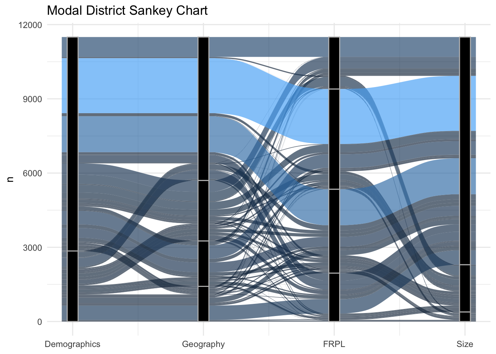
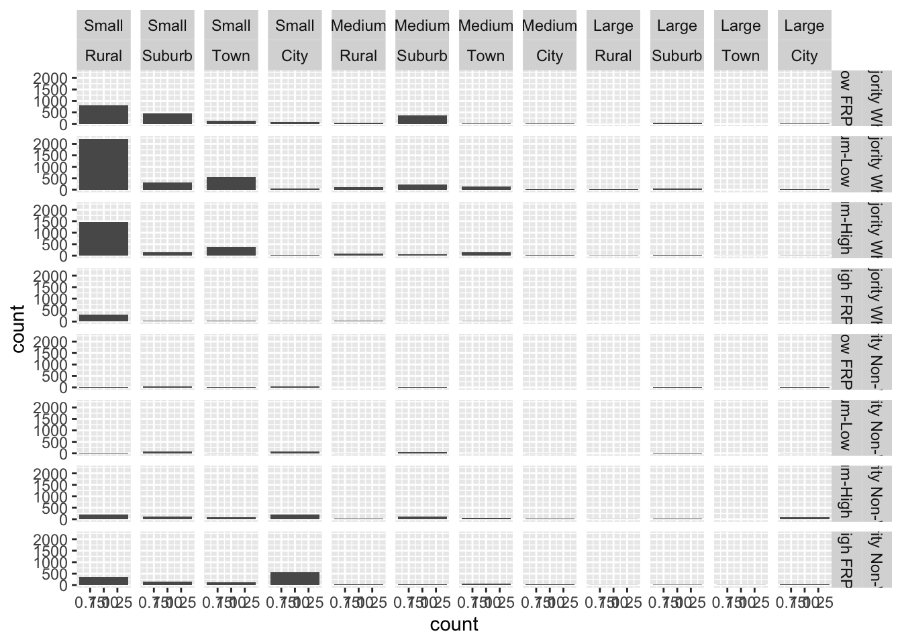

library(tidyverse)
library(educationdata)
library(janitor)
library(ggalluvial)
knitr::opts_chunk$set(out.width = '100%') Finding the modal school district
What's the most common type of district in the U.S.? Let's find out using R.
analysis
My good friend Ryan Estrellado recommended an NPR Planet Money podcast episode on the “Modal American.” Working with Ben Casselman, Planet Money explored the most ‘typical’ American. It was a fantastic, engaging episode about a common statistical technique that I’ve never seen applied in this way before. They ran the numbers on a variety of demographic variables to see what group is the most common in the U.S. (I highly recommend the episode - it’s pretty surprising!).
Ben Casselman shared the code he ran for the analysis. Ryan suggested running a similar analysis to find the modal school district, which I thought was brilliant! The analysis is below, but if you are desperate for the answer, the modal school district in the U.S. is [drum roll please]: (1) Majority (>=50%) White, (2) Small, (3) Rural, and (4) Medium-Low FRPL (between 25% and 50% FRPL).
Downloading and parsing data
I used NCES Common Core of Data (CCD) to pull Local Educational Agency (LEA) (a.k.a. school districts) demographic data. I wanted to try Urban Institute’s {educationdata} R package. They have enrollment and racial demographic data available to download through their package. For Free/Reduced Price Lunch data, I had to pull the data directly from the CCD as it’s not available via the Urban API.
What buckets do you choose for analysis? This is a bit tricky. I chose buckets I typically refer to for work. I also looked at some NCES reports to see how they typically think about districts. Ultimately, I decided on four buckets: urban-centric locale bucket, race/ethnicity bucket, size bucket, and FRPL bucket.
Urban-centric locale bucket
First, we download the directory data using the Urban Institute’s API. These data include the districts and their urban-centric_locale.
ccd_dir <- get_education_data(level = 'school-districts',
source = 'ccd',
topic = 'directory',
filters = list(year = 2016),
add_labels = TRUE)Because there are so many options for urban-centric locale, let’s collapse them to just the biggest buckets: City, Town, Rural, and Suburb.
ccd_urbanicity <-
ccd_dir %>%
select(leaid, urban_centric_locale) %>%
mutate(leaid = as.character(leaid),
geography = case_when(str_detect(urban_centric_locale, "City|city") ~ "City",
str_detect(urban_centric_locale, "Town|town") ~ "Town",
str_detect(urban_centric_locale, "Rural|rural") ~ "Rural",
str_detect(urban_centric_locale, "Suburb|suburb") ~ "Suburb")) %>%
select(-urban_centric_locale)Size & race/ethnicity buckets
Then, we download the enrollment data from the Urban Institute.
ccd_enroll <- get_education_data(level = 'school-districts',
source = 'ccd',
topic = 'enrollment',
filters = list(year = 2016,
grade = 99),
by = list('race'),
add_labels = TRUE) We want to create two buckets here:
- Size: Bucket districts by enrollment size, Small (less than 2500 students), Medium (between 2500 and 10,000 students), or Large (10,000 students or more). I used MDR’s definition for this.
- Race/Ethnicity: Bucket districts by Majority Non-White (50% or fewer of students are White) or Majority White (more than 50% of students are White).
ccd_enroll_buckets <-
ccd_enroll %>%
select(leaid, race, enrollment) %>%
spread(race, enrollment, -1) %>%
mutate(white_na = case_when(White == 0 ~ NA_real_, # districts with missing data loaded as 0 instead of NA for some reason
TRUE ~ White),
pct_white = white_na/Total,
enroll_na = case_when(Total < 0 ~ NA_real_, # districts with missing data loaded as 0 instead of NA for some reason
TRUE ~ Total)) %>%
mutate(demographics = case_when(pct_white >= .5 ~ "Majority White",
pct_white < .5 ~ "Majority Non-White",
TRUE ~ NA_character_),
size = case_when(enroll_na >= 10000 ~ "Large",
enroll_na < 10000 & enroll_na >= 2500 ~ "Medium",
enroll_na < 2500 ~ "Small"))Free/reduced price lunch bucket
Now, we load the FRPL data.
ccd_frpl <-
read_csv("https://media.githubusercontent.com/media/ivelasq/modal_district/master/data/raw/ccd_sch_033_1617_l_2a_11212017.csv")We want Free + Reduced Price Lunch numbers by district. This file also has Free Lunch and Reduced Lunch numbers, and it is school-level. We aggregate up Free + Reduced Price Lunch by district.
ccd_frpl_wide <-
ccd_frpl %>%
clean_names() %>%
mutate(leaid = as.character(leaid)) %>%
filter(data_group == "Free and Reduced-price Lunch Table",
lunch_program == "No Category Codes") %>%
select(leaid, student_count) %>%
group_by(leaid) %>%
summarise(frpl_student_count = sum(student_count))Then, we merge with the enrollment data to calculate percent FRPL by district. Our buckets are Low FRPL (less than 25%), Medium-Low FRPL (between 25% and 50% FRPL), Medium-High FRPL (between 50% and 75% FRPL), and High FRPL (greater than 75% FRPL). I originally did not have Medium-Low and Medium High split out but that bucket was so large that I thought this would bring more nuance.
ccd_enroll_buckets <-
left_join(ccd_enroll_buckets, ccd_frpl_wide) %>%
mutate(pct_frpl = frpl_student_count/enroll_na,
frpl = case_when(pct_frpl <= .25 ~ "Low FRPL",
pct_frpl > .25 & pct_frpl <= .5 ~ "Medium-Low FRPL",
pct_frpl > .5 & pct_frpl <= .75 ~ "Medium-High FRPL",
pct_frpl > .75 ~ "High FRPL"))Bringing it all together
Finally, we put all the datasets together. One question raised was what to do with missing data. Some districts, either because of small n-sizes or policy, do not report their demographic or FRPL numbers. In fact, some districts were missing enrollment data altogether! For the purposes of this analysis, I removed any district that was missing data in the FRPL or Race/Ethnicity Buckets. Any data without enrollment data is also excluded.
ccd_all <-
full_join(ccd_urbanicity, ccd_enroll_buckets, by = "leaid") %>%
filter(!is.na(frpl),
!is.na(demographics))
ccd_all <- # reordering factors
ccd_all %>%
mutate(demographics = factor(demographics, c("Majority White", "Majority Non-White")),
size = factor(size, c("Small", "Medium", "Large")),
geography = factor(geography, c("Rural", "Suburb", "Town", "City")),
frpl = factor(frpl, c("Low FRPL", "Medium-Low FRPL", "Medium-High FRPL", "High FRPL")))Running the analysis
We can see what is the modal school district - that is, the combination of our buckets that represents the most districts in the U.S.
Update 2019-09-18: Thanks to the input from Alison Hill on Twitter, instead of the grouper() function in the original analysis I’m using dplyr::count().
This is a great post! I think you don't need the grouper function- I think what you need is dplyr::count(sort = TRUE) (it also does the ungroup for you :) https://t.co/G6ccoQIHFC
— Alison Presmanes Hill (@apreshill) September 18, 2019
The n shows how many districts fit these criteria. Here are the first four but the full table is in the Appendix.
modal <-
ccd_all %>%
count(demographics, frpl, geography, size, sort = TRUE)
modal %>%
top_n(4) %>%
knitr::kable()| demographics | frpl | geography | size | n |
|---|---|---|---|---|
| Majority White | Medium-Low FRPL | Rural | Small | 2223 |
| Majority White | Medium-High FRPL | Rural | Small | 1454 |
| Majority White | Low FRPL | Rural | Small | 803 |
| Majority Non-White | High FRPL | City | Small | 576 |
The modal school district ends up being: Majority White, Rural, Small, Medium-Low FRPL districts. 18% (2484) of the 13,464 districts in our analysis fall within these criteria.
Takeaways
Some districts are all alike; every district is different in its own way
If you run each bucket individually, you get the same results as all of the groups together (as in, when running only based on size, the result is that Rural districts are the modal districts). This is slightly different from the Modal American analysis from NPR - none of these demographics seem to ‘split’ the groups.
This makes sense
- The U.S. is majority White and areas tend to be segregated.
- Majority of districts fall in the Medium FRPL buckets. Majority Non-White districts tend to have higher levels of FRPL, but there are so few of them compared to Majority White Districts, that they do not change the modal district much.
- The U.S. is very large and districts cannot get too geographically big in order to serve their students. In places with little population density, which is most of the U.S., these districts must remain small.
- Similarly, there are not that many Cities/Towns compared to Rural districts, probably because you need many districts in Rural areas to serve the spread-out population of students.
It’s really hard to visualize this
It was interesting trying to visualize these data, especially since there ended up being 87 (!) combinations. I tried a Sankey chart but it is a bit bananas.
ggplot(as.data.frame(modal),
aes(y = n,
axis1 = demographics,
axis2 = geography,
axis3 = frpl,
axis4 = size)) +
stat_alluvium(aes(fill = n),
width = 1/6,
alpha = 2/3,
aes.bind = FALSE) +
guides(fill = FALSE) +
geom_stratum(width = 1/12, fill = "black", color = "grey") +
geom_label(stat = "stratum", label.strata = TRUE, size = 2, hjust = "inward") +
scale_x_continuous(breaks = 1:4, labels = c("Demographics", "Geography", "FRPL", "Size")) +
ggtitle("Modal District Sankey Chart") +
theme_minimal()
I tried to visualize the data another way - using bar plots. Again, this gets a bit unruly with all the variables. This leads me to think it’s better to just look at the table.
ccd_all %>%
select(leaid, demographics, geography, size, frpl) %>%
mutate(count = 1) %>%
ggplot(aes(count)) +
geom_bar() +
facet_grid(demographics + frpl ~ size + geography)
Next steps
In addition to analyzing more variables (perhaps data that are less likely to correlate), it would be interesting to cut the data using smaller grain size for the buckets. There are probably very interesting nuances between Majority White districts for example - we just need the data (and bandwidth!) to find out.
I am in awe of social media, which allows us to learn and share in so many ways. My friend retweeted a news article, which prompted the person who wrote the code to share, and then we crafted an idea based on that. I think that’s pretty great!
Update 2019-09-18: Ben Casselman wrote a reply on how it would be interesting to conduct an analysis on the modal school experience. So exciting! Can’t wait to continue the analysis (and always looking for collaborators!)
Curious what this would look like if you weighted by student population – in essence, the modal school experience. (More students attend this type of school than any other.) Suspect the results would look quite different.
— Ben Casselman (@bencasselman) September 16, 2019
Appendix
Full table
ccd_all %>%
count(demographics, frpl, geography, size) %>%
knitr::kable()| demographics | frpl | geography | size | n |
|---|---|---|---|---|
| Majority White | Low FRPL | Rural | Small | 803 |
| Majority White | Low FRPL | Rural | Medium | 49 |
| Majority White | Low FRPL | Rural | Large | 2 |
| Majority White | Low FRPL | Suburb | Small | 459 |
| Majority White | Low FRPL | Suburb | Medium | 373 |
| Majority White | Low FRPL | Suburb | Large | 35 |
| Majority White | Low FRPL | Town | Small | 145 |
| Majority White | Low FRPL | Town | Medium | 32 |
| Majority White | Low FRPL | City | Small | 79 |
| Majority White | Low FRPL | City | Medium | 9 |
| Majority White | Low FRPL | City | Large | 9 |
| Majority White | Medium-Low FRPL | Rural | Small | 2223 |
| Majority White | Medium-Low FRPL | Rural | Medium | 107 |
| Majority White | Medium-Low FRPL | Rural | Large | 17 |
| Majority White | Medium-Low FRPL | Suburb | Small | 312 |
| Majority White | Medium-Low FRPL | Suburb | Medium | 241 |
| Majority White | Medium-Low FRPL | Suburb | Large | 47 |
| Majority White | Medium-Low FRPL | Town | Small | 545 |
| Majority White | Medium-Low FRPL | Town | Medium | 145 |
| Majority White | Medium-Low FRPL | City | Small | 60 |
| Majority White | Medium-Low FRPL | City | Medium | 37 |
| Majority White | Medium-Low FRPL | City | Large | 21 |
| Majority White | Medium-High FRPL | Rural | Small | 1454 |
| Majority White | Medium-High FRPL | Rural | Medium | 101 |
| Majority White | Medium-High FRPL | Rural | Large | 14 |
| Majority White | Medium-High FRPL | Suburb | Small | 136 |
| Majority White | Medium-High FRPL | Suburb | Medium | 68 |
| Majority White | Medium-High FRPL | Suburb | Large | 24 |
| Majority White | Medium-High FRPL | Town | Small | 397 |
| Majority White | Medium-High FRPL | Town | Medium | 143 |
| Majority White | Medium-High FRPL | Town | Large | 3 |
| Majority White | Medium-High FRPL | City | Small | 43 |
| Majority White | Medium-High FRPL | City | Medium | 38 |
| Majority White | Medium-High FRPL | City | Large | 9 |
| Majority White | High FRPL | Rural | Small | 303 |
| Majority White | High FRPL | Rural | Medium | 33 |
| Majority White | High FRPL | Suburb | Small | 41 |
| Majority White | High FRPL | Suburb | Medium | 8 |
| Majority White | High FRPL | Town | Small | 47 |
| Majority White | High FRPL | Town | Medium | 14 |
| Majority White | High FRPL | City | Small | 19 |
| Majority White | High FRPL | City | Medium | 2 |
| Majority Non-White | Low FRPL | Rural | Small | 10 |
| Majority Non-White | Low FRPL | Suburb | Small | 35 |
| Majority Non-White | Low FRPL | Suburb | Medium | 16 |
| Majority Non-White | Low FRPL | Suburb | Large | 2 |
| Majority Non-White | Low FRPL | Town | Small | 2 |
| Majority Non-White | Low FRPL | City | Small | 37 |
| Majority Non-White | Low FRPL | City | Large | 3 |
| Majority Non-White | Medium-Low FRPL | Rural | Small | 23 |
| Majority Non-White | Medium-Low FRPL | Rural | Medium | 6 |
| Majority Non-White | Medium-Low FRPL | Suburb | Small | 83 |
| Majority Non-White | Medium-Low FRPL | Suburb | Medium | 59 |
| Majority Non-White | Medium-Low FRPL | Suburb | Large | 24 |
| Majority Non-White | Medium-Low FRPL | Town | Small | 8 |
| Majority Non-White | Medium-Low FRPL | Town | Medium | 4 |
| Majority Non-White | Medium-Low FRPL | City | Small | 75 |
| Majority Non-White | Medium-Low FRPL | City | Medium | 7 |
| Majority Non-White | Medium-Low FRPL | City | Large | 6 |
| Majority Non-White | Medium-High FRPL | Rural | Small | 209 |
| Majority Non-White | Medium-High FRPL | Rural | Medium | 20 |
| Majority Non-White | Medium-High FRPL | Rural | Large | 8 |
| Majority Non-White | Medium-High FRPL | Suburb | Small | 128 |
| Majority Non-White | Medium-High FRPL | Suburb | Medium | 105 |
| Majority Non-White | Medium-High FRPL | Suburb | Large | 24 |
| Majority Non-White | Medium-High FRPL | Town | Small | 95 |
| Majority Non-White | Medium-High FRPL | Town | Medium | 49 |
| Majority Non-White | Medium-High FRPL | City | Small | 207 |
| Majority Non-White | Medium-High FRPL | City | Medium | 43 |
| Majority Non-White | Medium-High FRPL | City | Large | 74 |
| Majority Non-White | High FRPL | Rural | Small | 359 |
| Majority Non-White | High FRPL | Rural | Medium | 50 |
| Majority Non-White | High FRPL | Rural | Large | 5 |
| Majority Non-White | High FRPL | Suburb | Small | 159 |
| Majority Non-White | High FRPL | Suburb | Medium | 49 |
| Majority Non-White | High FRPL | Suburb | Large | 16 |
| Majority Non-White | High FRPL | Town | Small | 129 |
| Majority Non-White | High FRPL | Town | Medium | 73 |
| Majority Non-White | High FRPL | Town | Large | 6 |
| Majority Non-White | High FRPL | City | Small | 576 |
| Majority Non-White | High FRPL | City | Medium | 28 |
| Majority Non-White | High FRPL | City | Large | 39 |